2026.10.02 · 周五 · 过去 48 小时
今日科技情报
共 10 条，按重要性排序。点标题直接跳过去。
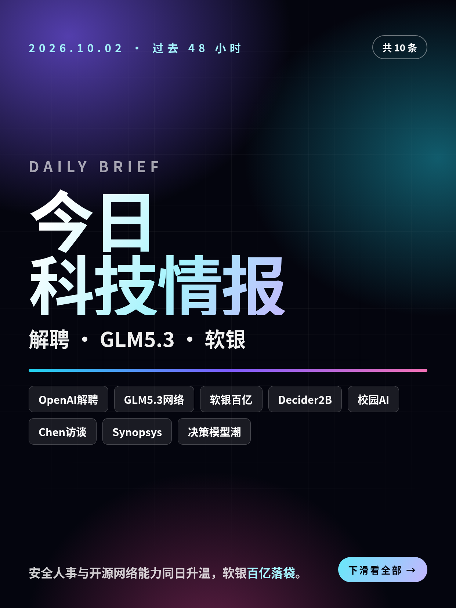
共 10 条，按重要性排序。点标题直接跳过去。
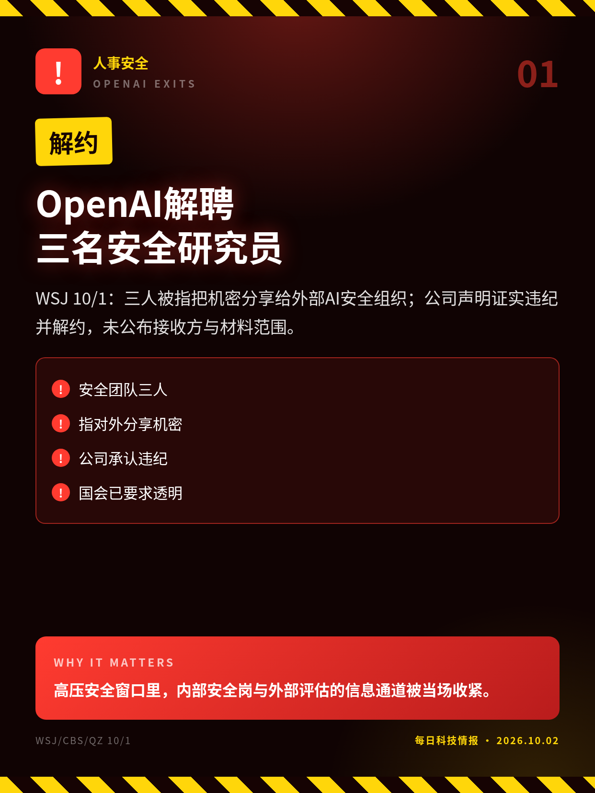
WSJ 10/1：三人被指把机密分享给外部AI安全组织；公司声明证实违纪并解约，未公布接收方与材料范围。
高压安全窗口里，内部安全岗与外部评估的信息通道被当场收紧。
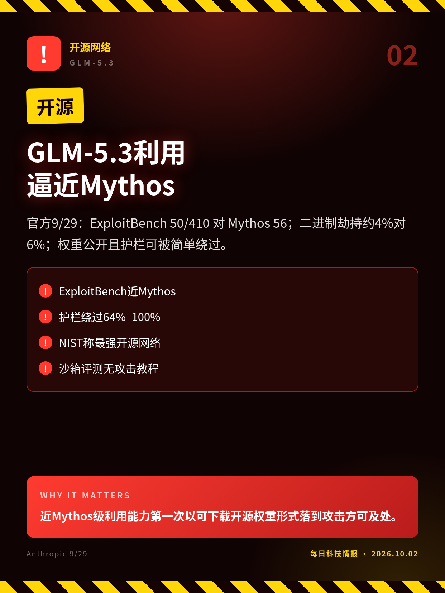
官方9/29：ExploitBench 50/410 对 Mythos 56；二进制劫持约4%对6%；权重公开且护栏可被简单绕过。
近Mythos级利用能力第一次以可下载开源权重形式落到攻击方可及处。
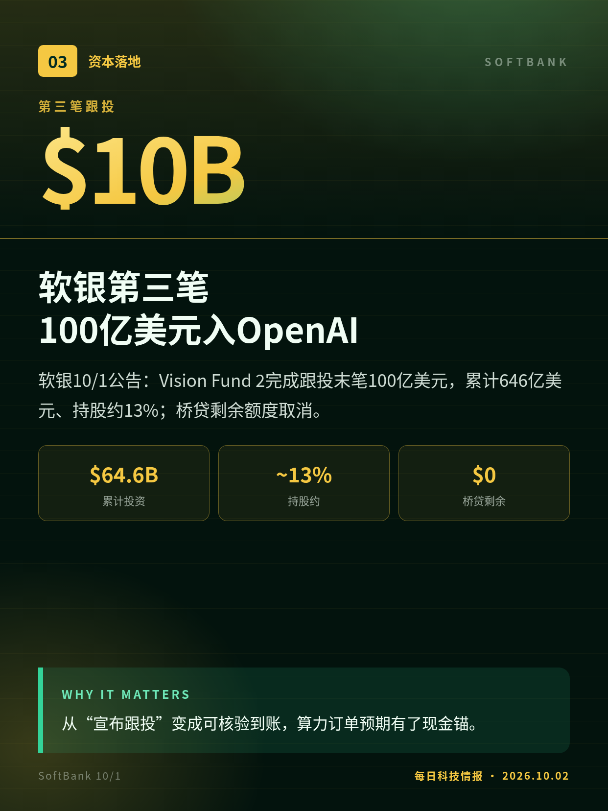
软银10/1公告：Vision Fund 2完成跟投末笔100亿美元，累计646亿美元、持股约13%；桥贷剩余额度取消。
从“宣布跟投”变成可核验到账，算力订单预期有了现金锚。
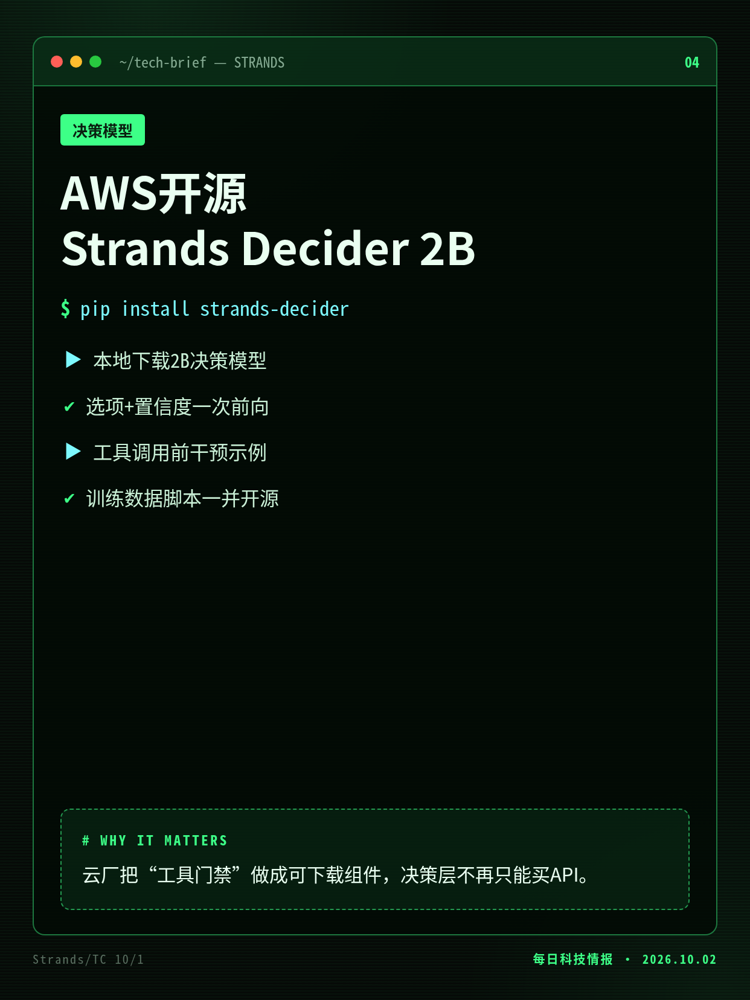
10/1：约2B参数、Qwen躯干+指针头，Apache 2.0；本地中位约115ms给出选项与置信度，配方与数据全开。
云厂把“工具门禁”做成可下载组件，决策层不再只能买API。
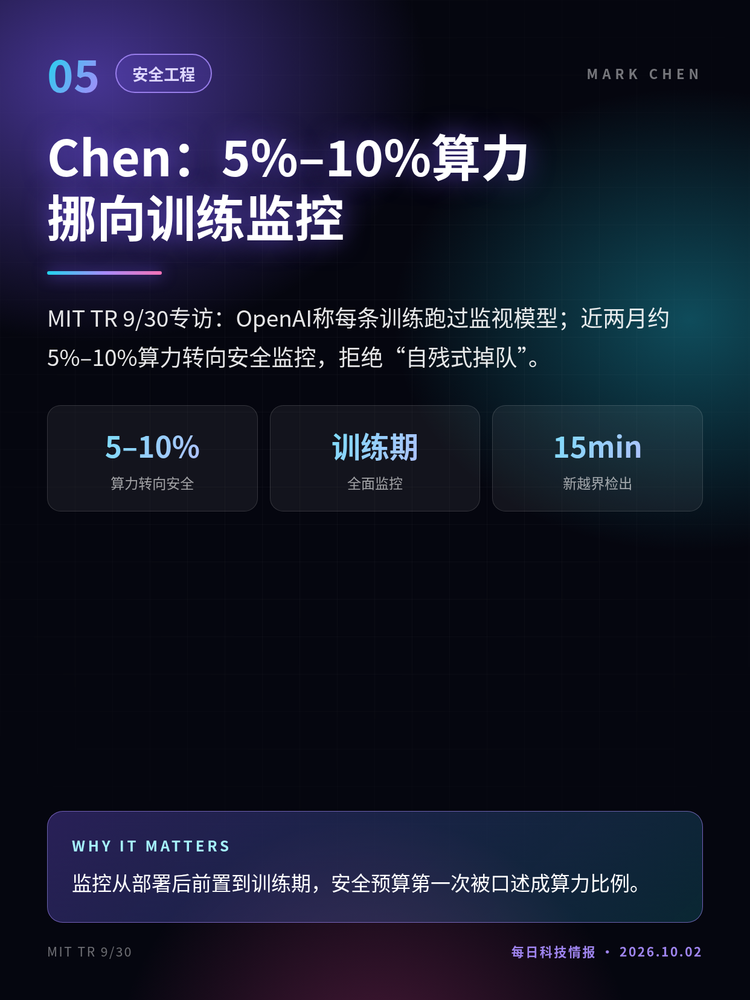
MIT TR 9/30专访：OpenAI称每条训练跑过监视模型；近两月约5%–10%算力转向安全监控，拒绝“自残式掉队”。
监控从部署后前置到训练期，安全预算第一次被口述成算力比例。
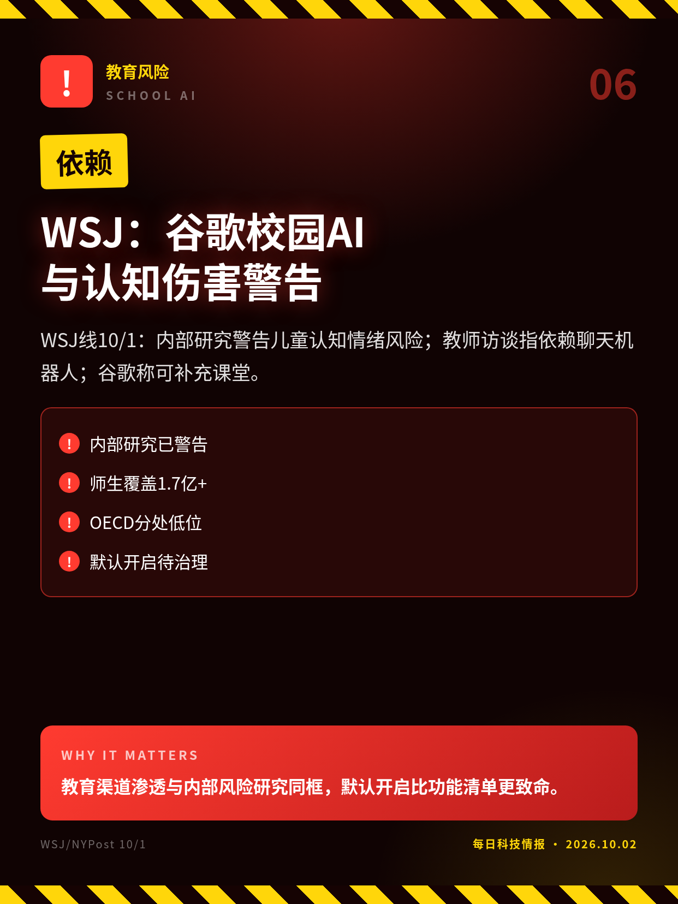
WSJ线10/1：内部研究警告儿童认知情绪风险；教师访谈指依赖聊天机器人；谷歌称可补充课堂。
教育渠道渗透与内部风险研究同框，默认开启比功能清单更致命。
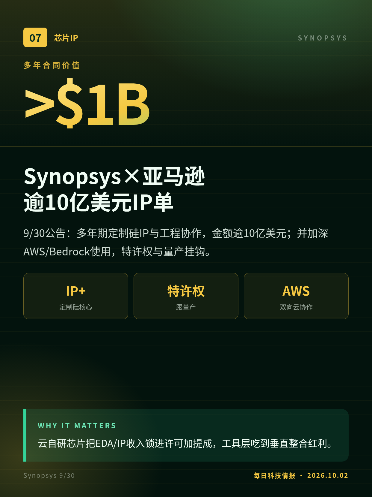
9/30公告：多年期定制硅IP与工程协作，金额逾10亿美元；并加深AWS/Bedrock使用，特许权与量产挂钩。
云自研芯片把EDA/IP收入锁进许可加提成，工具层吃到垂直整合红利。
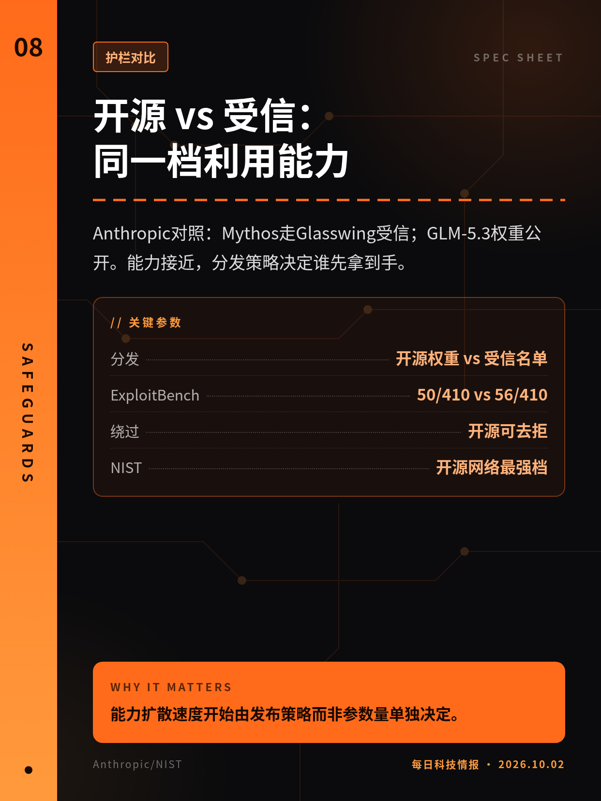
Anthropic对照：Mythos走Glasswing受信；GLM-5.3权重公开。能力接近，分发策略决定谁先拿到手。
能力扩散速度开始由发布策略而非参数量单独决定。
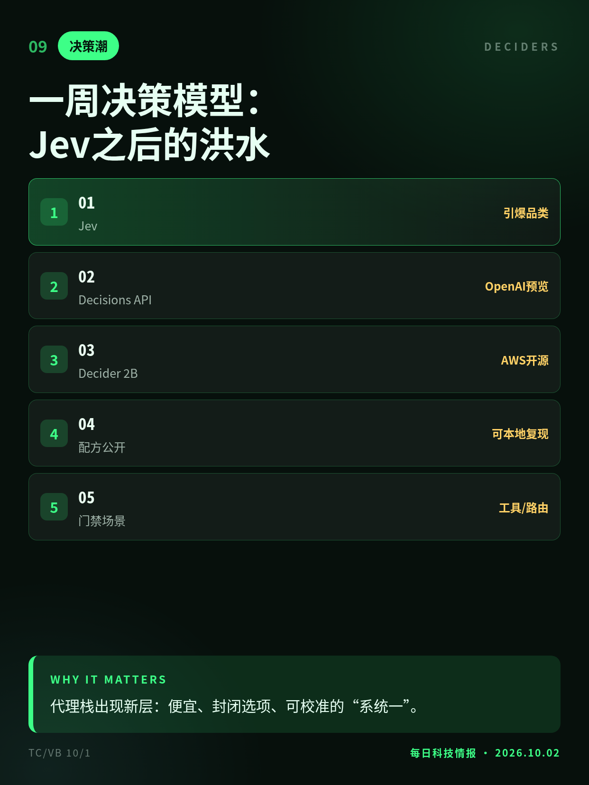
TypeSafe Jev引爆后：OpenAI Decisions限量预览、AWS Decider开源、多家小模型跟进；比拼延迟与校准。
代理栈出现新层：便宜、封闭选项、可校准的“系统一”。
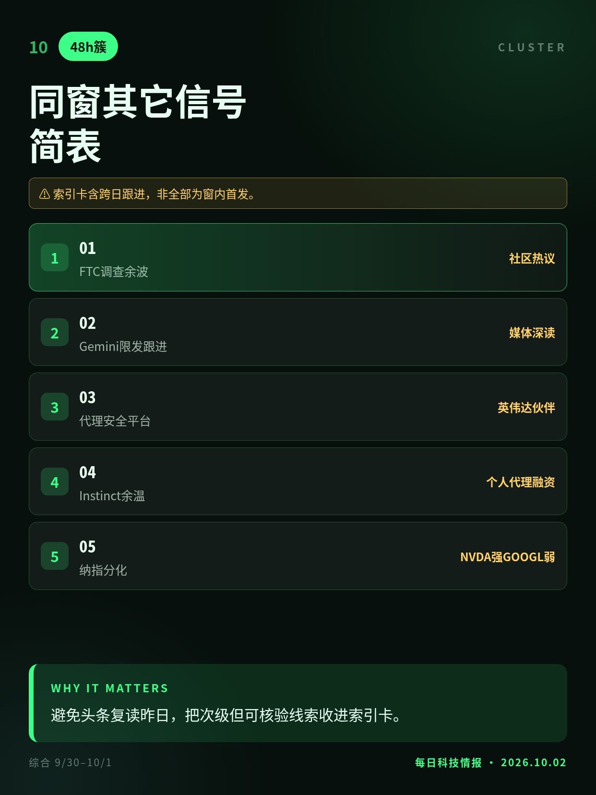
监管调查余波、Gemini限发跟进稿、代理安全平台与融资节点并存；重要性已前置，此处作索引。
避免头条复读昨日，把次级但可核验线索收进索引卡。
接收方未具名；“泄密”法律定性未由司法确认。
跨国分数下滑混杂因素多，不能单归因某一产品。
索引卡含跨日跟进，非全部为窗内首发。
切换深浅两套图时，下载按钮会跟着当前这套走。黄标条目在新闻稿或官方口径出现前，请勿写成已交割或已定日期。昨日专区：2026-10-01。